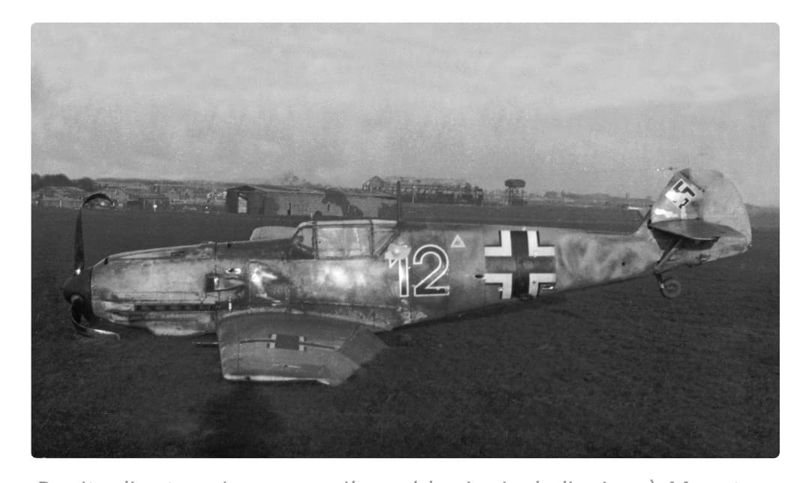
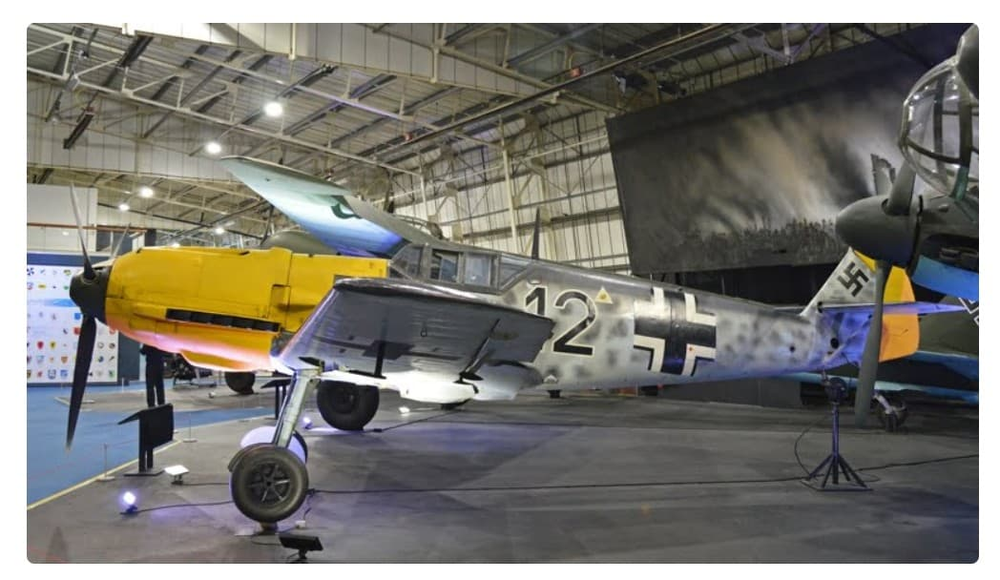

Le Messerschmitt Bf 109 est le chasseur emblématique de la Luftwaffe. Rapide, agile et constamment amélioré au fil de la guerre, il domine les premières années du conflit et reste en service jusqu’en 1945. Produit à plus de 33 000 exemplaires, il est l’un des avions militaires les plus construits de l’histoire.

Conçu pour être léger et performant, le Bf 109 combine une excellente vitesse ascensionnelle, une bonne maniabilité et un armement efficace. Il est utilisé dans tous les rôles : supériorité aérienne, escorte, interception, attaque au sol.

Le Bf 109 évolue constamment : nouvelles ailes, moteurs plus puissants, armement renforcé. Les versions les plus connues sont :
Le Messerschmitt Bf 109 n’est pas un avion unique : c’est une véritable famille. Conçu avant-guerre, il évolue constamment pour rester compétitif. Au total, on compte 12 versions principales et plus de 100 sous‑variantes, adaptées à différents rôles, moteurs, armements et théâtres d’opérations.
Chaque variante apporte des améliorations : moteurs plus puissants, armement renforcé, blindage additionnel, verrières modifiées, versions tropicalisées, ou encore modèles spécialisés pour l’attaque au sol ou la reconnaissance.